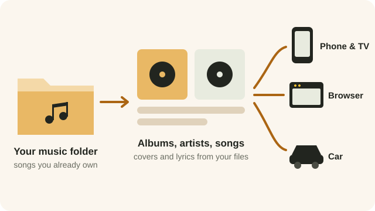

Beebo plays the songs you already own, the same way it plays your films. Point it at your music folder and your albums turn up on every screen.
STEP 1
In Beebo on the PC, open Settings and find Music folder, just under your TV Shows folder. Pick the folder your songs are in, or use your Windows Music folder in one click.
You can add more than one folder, and everything inside them is included.
Beebo reads MP3, M4A (including Apple Lossless), FLAC, OGG, Opus and WAV files.
It keeps an eye on those folders and picks up new songs by itself. There is also a Check for new songs button if you would rather not wait.
STEP 2
Song titles, artists, albums and cover art are read from the files themselves. If a song has no cover inside it, Beebo uses a picture named cover, folder or front in the same folder.
Nothing is looked up online. No posters service, no lyrics service, no tag service — your music library is built entirely from what is on your own disk.
LYRICS
Put an .lrc lyrics file next to a song, with the same name, and Beebo shows the words. If the file has timings in it, the current line lights up as the song plays, and you can tap a line to jump there.
For example, Hallelujah.mp3 and Hallelujah.lrc in the same folder.
A lyrics file without timings is shown as plain text instead. Lyrics saved inside the song file itself are used when there is no .lrc file.
Plain .txt files are not used, and lyrics are never downloaded from the internet.

NOW PLAYING
The Now Playing screen has the cover, a Lyrics button and a Queue button, with shuffle and repeat either side of the play button.
Repeat has three settings: off, repeat the queue, and repeat this song.
The queue shows what is coming up. Tap a row to jump to it, or remove it. Any song has Play next and Add to queue in its menu.
It keeps playing with the screen off, with controls on your lock screen, in the notification shade, and on Bluetooth headphones and car buttons. A small strip at the bottom of the app shows what is playing wherever you are.
Music and films take turns: starting a song pauses a film, and starting a film pauses the music.

EVERY SCREEN
On the phone and TV, open Browse and choose Music, then Albums, Artists or Songs. In a browser, there is a Music page. In the car, Music sits at the top of the Beebo menu.
Phone and TV: search artists, albums and songs, sort albums by name, artist, year or recently added, and shuffle everything.
Browser: a grid of albums with a search box; open an album to play it or shuffle it, with lyrics in the bar at the bottom.
Car: Shuffle everything, Artists and Albums, no more than three taps deep. Tap a song and the rest of its album follows.
Away from home you can lower the music quality to use less data, in the gear beside the Music section on your phone. It is a separate setting for home and away.
No, in the same way it comes with no films. Beebo plays the song files you already have on your own computer.
Beebo only uses the cover inside a song file, or a picture named cover, folder or front in that album’s folder. Adding one of those and pressing “Check for new songs” is usually all it takes.
Not at the moment. Films and episodes can be downloaded; songs are streamed from your computer.
Not at the moment. Casting works for films, shows and photos. Music plays on the phone, the TV app itself, the browser and the car.
No. Music is kept out of the household’s watch history.
MP3, M4A (including Apple Lossless), FLAC, OGG, Opus and WAV. Others are skipped.